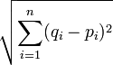
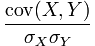
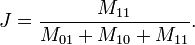
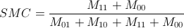

Data mining is about looking for patterns in data. In order to find patterns, we need a metric to be able to say that this data object is "like" that data object, or that this piece of data is "unlike" another piece of data. In other words, we need a metric to determine similarity, or dissimilarity, or data objects. That is the subject of this page. I will discuss five similarity metrics: Euclidean distance, Pearson correlation, the Jaccard similarity coefficient, and the simple matching coefficient. A similarity metric is a mathematical algorithm that returns a mathematical measure of similarity. These metrics are an important foundation upon which the clustering algorithms I will discuss in the next section are built.
Euclidean distance is the "ordinary" distance between two objects. This is the distance one would get by taking a ruler and measuring the distance between two objects. In terms of data objects, assume that the objects are plotted in two dimensional space on a graph. Euclidean distance would be the length of the line between these two plots. This distance is discovered using the Pythagorean theorem. Since the coordinates of each point on the graph are known, the X and Y distance between the two points can be determined, resulting in known values for two legs of a right triangle. The distance between the two data points is the hypotenuse of this triangle, and is discovered by finding the square root of the sum of the squares of each leg. The formula for finding the Euclidean distance between two points, p and q, in Euclidean N-dimensional space can be succinctly represented with the expression:
For a practical example, examine the code below. This code assumes two people with movie reviews. Each user rated the movies they saw on a scale from 1 to 5. The following code first creates an array that contains the reviews for all the movies they have both seen, and then uses Euclidean distance to determine how similar their movie preferences are. Calculating 1 divided by 1 plus the square root of the sum of differences squared causes the algorithm to a return a value between 1 and 0. A value of 1 indicates a perfect match, while 0 indicates no match at all.
Pearson correlation is very similar to Euclidean distance. Imagine the above case, where the similarity of movie preference is being calculate. If one user never gave a rating higher than a 3, and another user never gave a rating below a 3, then assuming they were a perfect match on any movie they both gave a 3 too would be a fallacy. Instead, user one loved that movie, while user 2 hated it. Euclidean distance cannot account for such "inflation" and "deflation" in ratings, but Pearson correlation can. Pearson correlation takes into account the variation of values in each set, which has the effect of "normalizing" inflation. It can succcintly defined with following expression:
The Pearson correlation coefficient between two data points is defined as the covariance of the two points divided by the product of their standard deviations. Again, using the example of data points being plotted on a two dimensional graph, Pearson correlation can be thought of as the line of best fit between the points of a given set. For example, imagine the two users in the movie ratings example both had their ratings plotted on a graph with movies on the X-axis and the rating on the Y-axis. Instead of comparing the actual values for each of their ratings, the users are instead compared by where the line of best fit for all their ratings goes through a particular movie. This has the effect of normalizing for inflation, and would able to recognize that our example users, while both giving a 3 for a particular movie, were in fact not a match at all. Using the same example case of movie recommendations as in the above code, the following algorithm would return a value between 1 and -1 indicating the measure of similiarity in movie preference between two users. A 1 represents strong positivie correlation or a good match, while a -1 represents a strong negative correlation, which in this case would mean a bad match. A value of 0 indicates no correlation, which in this case would mean the usres saw none of the same movies, and thus cannot be compared for similarity of preference.
The Jaccard similarity coefficient and simple matching coefficient are used for measuring the similarity between sets of binary data. In binary data, values are either present of absent. A good example of binary data is market-basket data. For example, if a comparison between the contents of two customers' shopping carts was desired, a record could be created for each customer. This record would contain columns for every item in either basket, and then would contain a 0 or 1 in the row for the respective customer if he had the item in his cart. These two records could then be compared using Jaccard or SMC to determine the similarity of these customers' shopping habits. This might be useful is suggesting products to customers, or in making sure frequently bought together items are placed close to each other in the store. Jaccard is better for asymetric data, because it ignores 00 matches, instances in which the object appears in neither record. For example, if neither of the customers bought apples, apples would be ignored when calculating the similarity between the customers' shopping carts. The equation for the Jaccard similarity coefficent can be expressed as:
Continuing with the shopping cart example, here is an algorithm that will calculate the Jaccard similarity coefficient between two customers. It assumes two instance variables which are arrays containing a 0 in each column for an item that customer did not buy, and a 1 for items that he did buy.
The simple matching coefficent, on the other hand, does include 00 matches. So, in the shopping cart example, the simple matching coefficient would include the items neither customer bought. The equation for determinng the simple matching coefficient can be expressed as:
Here is an algorithm that will calculate the simple matching coefficient. It requires the same instance variables as the previous Jaccard algorithm.